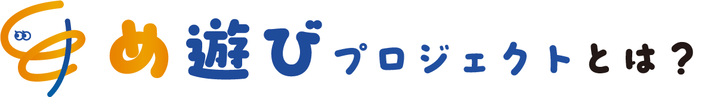
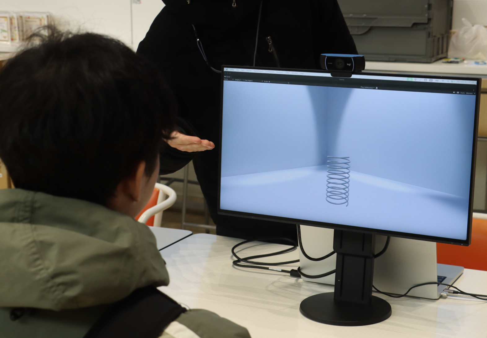

2025/05/05
スイトピアテラス
2025/02/15
あいち ワークショップギャザリング mini
2024/7/20-21
IAMAS OPEN HOUSE 2024

め遊びプロジェクトは、目や目元の動きを用いた体験型ワークショップを展開しています。
《め触り》《めモーション》の２つのワークを通じて、仮想のバネを操作してモノの質感を“感じる”体験や、表情の動きを誇張して観察する試みなどを行います。
目をインターフェースとして捉えたこれらの体験を通じて、ふだん意識されにくい目の動きに注目し、新たな感覚の発見を促します。
そして、目を「見る」ためだけでなく、「感じる」「表現する」ための器官として再認識することを目指しています。
